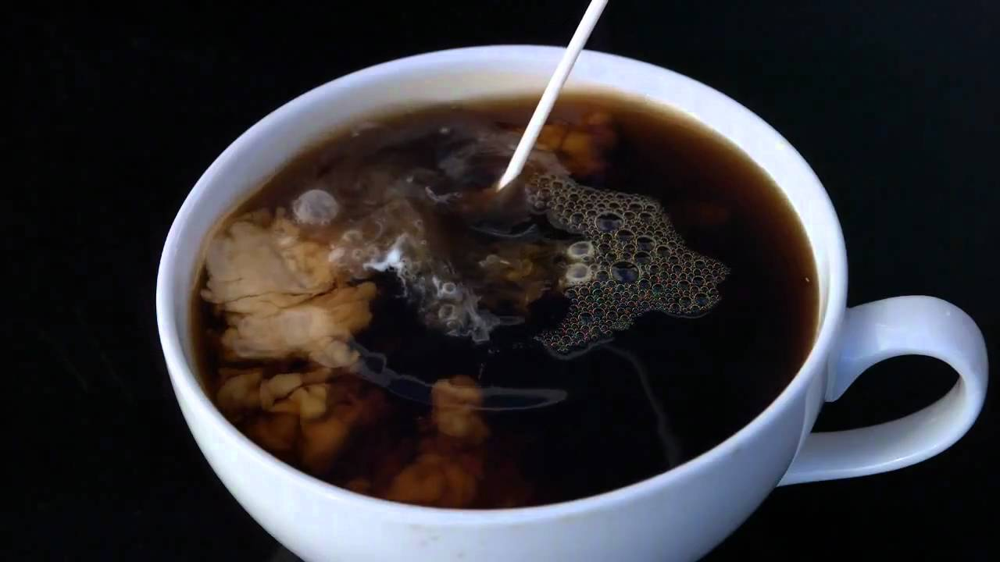
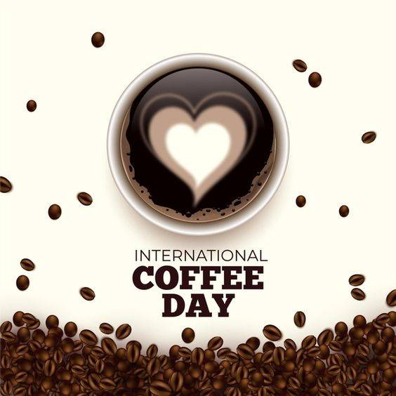
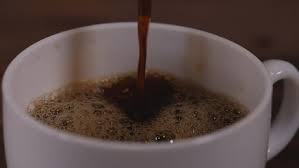
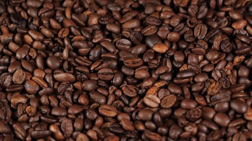
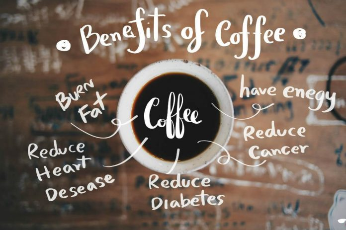

HEY FRNDS THIS A COFFEE SHOP $ FOOD HUB WEBSITE. OUR WEBSITE IS AN INDIAN WEBSITE.AND ITS PUBLISH IS AN INDIAN LANGUAGE FORM.
SO YOU ARE ALSO SEARCH OUR CONTENTS AND LOOK OUR WEBSITE PAGES TO KNOW MORE MORE INFORMATION ABOUT OUR TASTE OF COFFEE MUGGS.
COFFEES SHOP
All Types Of Flavours Of Coffee are AVALAIBLE..And Yummy (Fast.Foods) also.So please check ALL DETAILS or Gain Fun of Food $ Drink HUB.
...Some LINES For Taste Of Coffee..
coffe is all about choice
a cup of coffee can complete your day
what's life without coffee.
power up with coffee..
FOR YOU
WE try our best to showing for our business CONTENTs. TO our kind customers.
because CUSTOMERS satisfaction is the first impression for any bussiness mans.so this website is fully realiable and our users also satisfying from this blocks.we have not share personal INFORMATION of our users and we have show only real view of web.dont take be show fake info..
Some Quisons:-
1.How do you start a conversation with a coffee lover?
Help you start a conversation with the person in front of you.
Make you seem like a coffee genius.
Give you ideas on what to say about your favorite drink.
Increase your knowledge about your favorite drink.
Give you the tools to debate about coffee.

2.What are people who like coffee called?
A coffee lover could be called a coffee....
aficionado, coffeeholic or coffee addict.

3.What do you love about coffee?
Many people drink coffee for the caffeine, and while it's great for a morning pick me up, coffee is so much more than just a shot of stimulation. We love coffee for the scientific and artistic freedom that it gives us as a team. We love the communal aspect of the beverage, and the many ways that you can prepare it.

4.herder Kaldi
Coffee grown worldwide can trace its heritage back centuries to the ancient coffee forests on the Ethiopian plateau.There, legend says the goat herder Kaldi first discovered the potential of these beloved beans.

5. HEALTH BENEFITS OF COFFEE
Coffee boosts your physical performance. ...
Coffee may help you lose weight. ...
Coffee helps you burn fat. ...
Coffee helps you focus and stay alert. ...
Coffee lowers risk of death. ...
Coffee reduces risk of cancers. ...
Coffee reduces risk of stroke. ...
Coffee reduces risk of Parkinson's disease.

SEE NOW.
OUR BRANDS,OUR MENU,OUR CONTENTS,OR FOOD GALLERY ETC.. IN ALL WEBSITE..SO LETS START